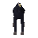
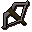
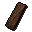

Graveyard of Shadows
Location at 3167, 3673 · Wilderness
Open on the world map → Open in knowledge graph → Below: Graveyard of Shadows (underground)
NPCs
| NPC | Level | Spawns | Notable drops |
|---|---|---|---|
 Black unicorn | 27 | 8 | |
| 24 | 6 | Herb drop table, Fishing bait, Coins, Iron mace | |
| 21 | 5 | ||
| 19 | 2 | ||
| 18 | 15 | Fishing bait, Herb drop table, Coins, Iron arrow | |
| 1 | 3 |
Ground items

Crossbow x1
Plank x5